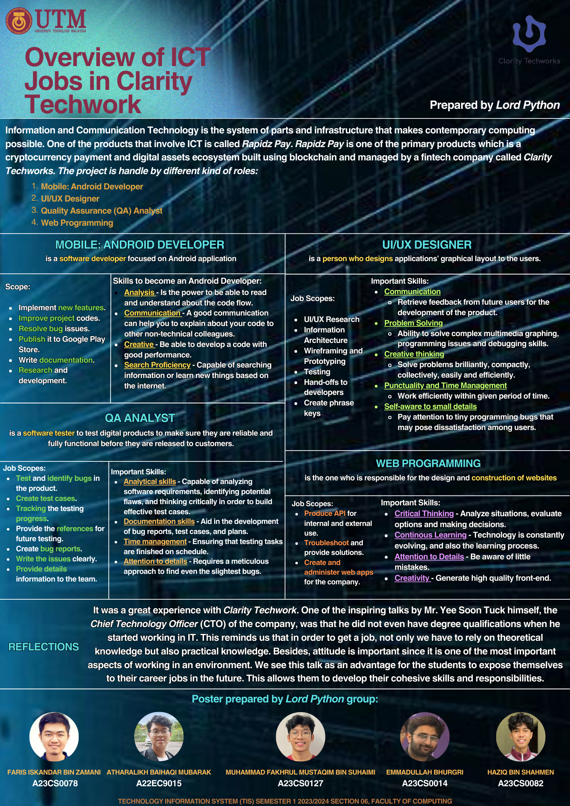

For the second Assignment, we have an opportunity to join an industry talk with Clarity Techworks SDN BHD In this talk, we have the advantage of knowing what is like to work in a real-world all of the speakers describe what kind od work they do. How do they manage to work there, what they learn before they join the company and so on.
It was a great experience with Clarity Techwork. One of the inspiring talks by Mr. Yee Soon Tuck himself, the Chief Technology Officer (CTO) of the company, was that he did not even have degree qualifications when he started working in IT. This reminds us that in order to get a job, not only we have to rely on theoretical knowledge but also practical knowledge. Besides, attitude is important since it is one of the most important aspects of working in an environment. We see this talk as an advantage for the students to expose themselves to their career jobs in the future. This allows them to develop their cohesive skills and responsibilities.
Take a look at the report in my
GitHub RepositoriesTake a look at our poster
